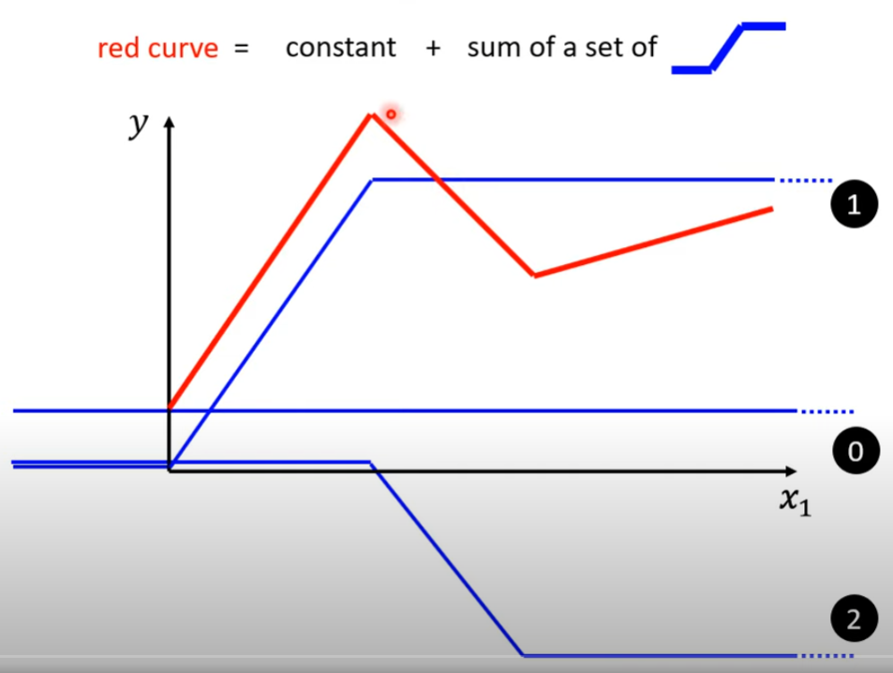

LOSS越小越好 L(b,w) |e1是誤差值| ， LOSS的高低取決於誤差值(e)的平均 e1 e2 e3是何來? 取決預測後的y - y^ 得到
b,w則是影響y - y^ 間接影響得出的e1 e2 e3 並影響誤差值 並能知道LOSS大小
b (bias 偏差值)w weight __w,b皆未知數，都是透過訓練得知Piecewise Linear Curves 由多個藍色線段組成

w 改變坡度，b 左右移動，c 改變高度

先分清楚是哪一個問題，一個是因為model不夠大造成model bias
能看出是因為optimization的問題，因56層的前20層只要複製下方20層方式 就能達到相同水平。
如果你的高層數訓練的loss比低層數的loss還高，很有可能是出在optimization的問題
如果是model bias就把model變大
training 的loss小 ，而testing的loss大才叫做overfitting
RMS Prop是指:會依據gradien的坡度大小更動你的初始學習率，坡度越大學習越小 ，坡度越小學習越大
會依據g1與原m1(藍虛線)的方向折衷進行下一步的前進(實藍線)
原本照著gradien計算出來的方向移動，加入monentum就是將過去gradien的加總當作下一個updata這就是monentum
RMS Prop是指:會依據gradien的坡度大小更動你的初始學習率，坡度越大學習越小 ，坡度越小學習越大
(Gradient descent)梯度更新法有很多種，其中一種是一次使用全部的訓練資料計算損失函數的梯度，並更新一次權重，如果要更新N次的話 ，就要計算整個訓練資料N遍，這方法沒效率。因此出現隨機梯度下降法(SGD)一次計算一個批次(batch)資料的梯度職並更新一次權重。adam優化器 融合AdaGrad+Momentum。 AdaGrad會根據梯度來調整learning rate。 Momentum則是加入原始的動量去運算
指訓練的模型對驗證資料集(validation)的表現很差，但對訓練資料集(training)的表現很好，訓練資料的損失值持續下降，但是驗證資料的損 失值逐漸上升。
overfitting的可能性是因為模型太過複雜而資料量過少，所以將僅有的資料訓練過度，在預測時可能執著在某些特徵上__(個人認為)
解決方式
Dropout 簡單來說神經網路在每次訓練都使用不同的神經元去做學習，如此將可以有效避免神經網路太過依賴局部特徵。
在基於距離的模型中，資料標準化用於預防範圍較大的特徵對預測結果進行較大的影響。不過使用標準化的原因不僅僅只有這一個，對於不同的模型會有不同的原因。
在訓練當中正向傳播與反向傳播為保持梯度穩定，如w權重過大會出現梯度爆炸而梯度趨近於0則梯度消失
w*0.001 使網路不對稱，不對稱才能使每個特徵值運算不同
初始化不能乘0如w*0那每個特徵運算都是一樣的
而*0.01使得W很小是因为，可以参照激活函数sigmoid和tanh，当W很大，用W * X+b=a得到的a很大，再用对a用激活函数如sigmoid(a)，由于a很大了，sigmoid(a)中的a会趋向正无穷或负无穷，则函数值sigmoid(a)趋向于一个平缓的趋势，在梯度下降的时候计算的梯度很小，会导致学习的很慢，故使得W取一个很小的值(激活函数图sigmoid,tanh在网上可以很容易找到)。不过在某些情况下不取0.01.会取其他的比较小的值
model.add 的add 可表達成將層的特徵(結果)與層的特徵(結果)進行連結。
Keras中的两种模型:Sequential和Model用法